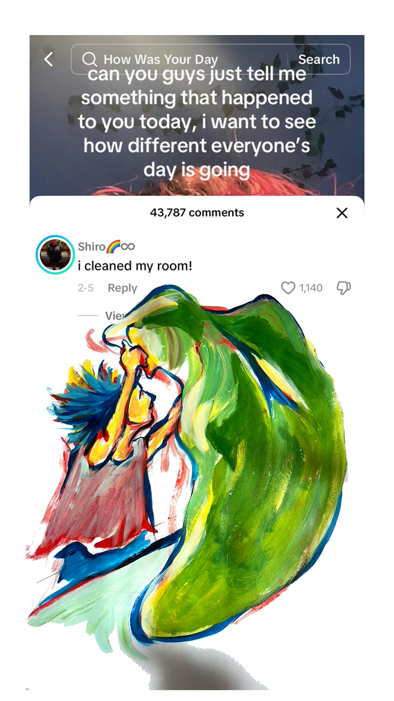
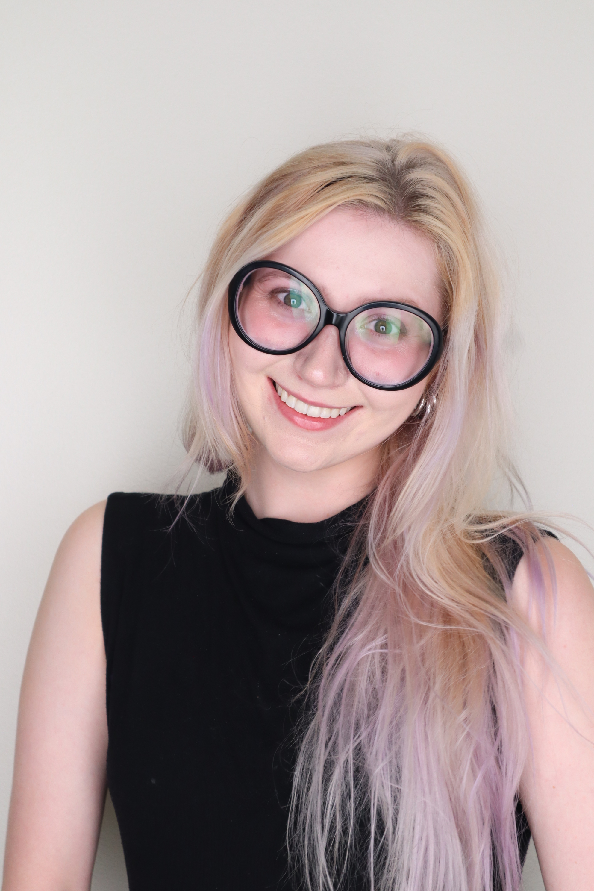
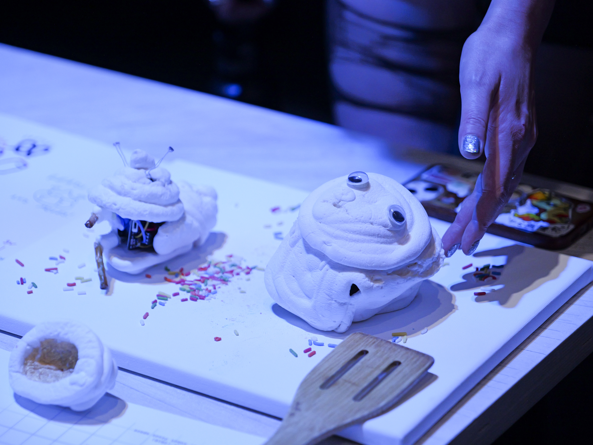
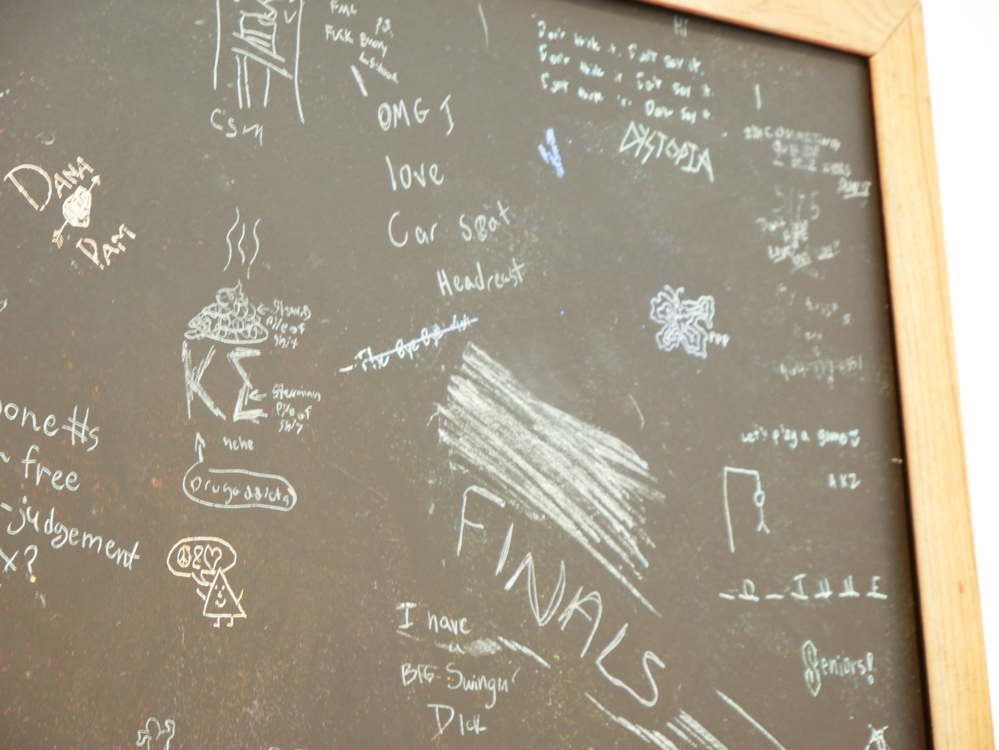
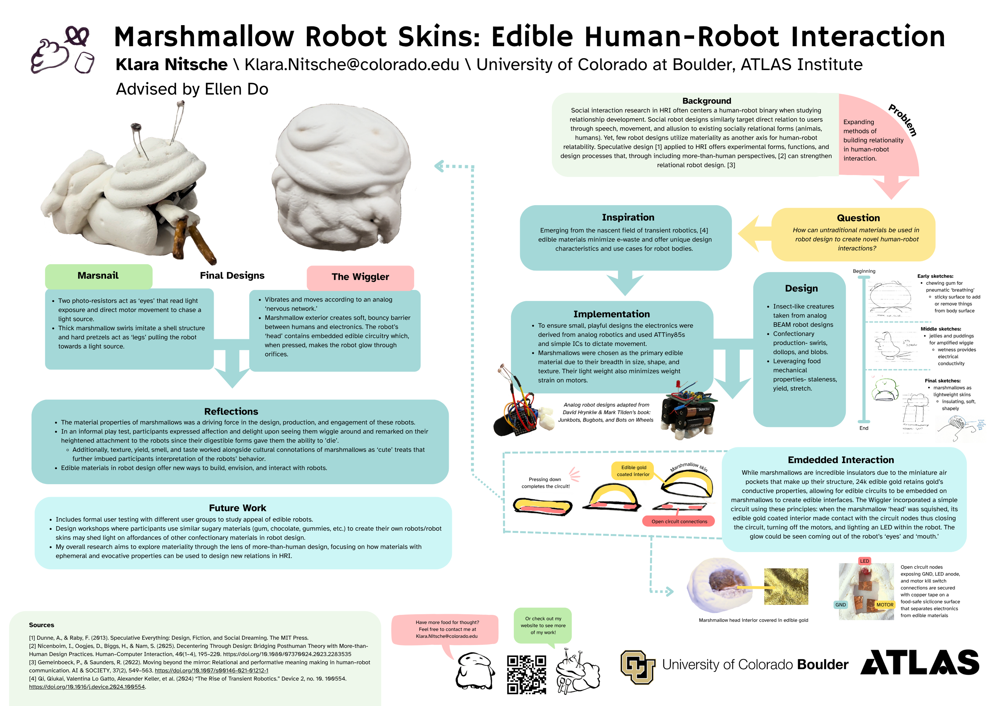
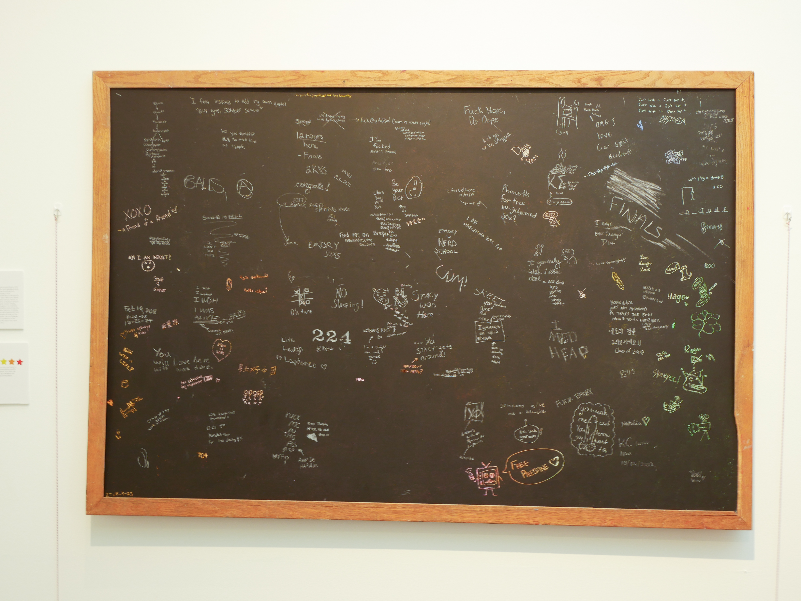

Art + Work
I enjoy playing with texture and saturation in my paintings, which often shows in my graphic design work. Below are some pieces I created throughout various empolyment positions at Emory University and CU Boulder, as well as some of my original works.

About Me

I am interested in how physical forms of technology can be altered to create unexpected interactions, and how the process of alteration interpositions cultural, symbolic, and material properties that influence social reception of technology. My work is fueled by a desire to understand the limits of human communication and inspired by the rapid growth of robotics; asking what design properties make us connect to and through a technology as well as how state-of-the-art device experiences can be reimagined through new materiality. As more computational objects are given 'agentic' abilities, how do we design connection past programmed discussion? What other methods of relatability lie in a robot's materiality, presence, or ability to change?
📄 Curriculum Vitae PDF · Updated 2026Research
...
Projects
Works ranging from art installations, typefaces, reports, and robot simulations.

Robots & AI
Materiality
Marshmallow Robots
Marshmallow robot skins that explore what edible human-robot-interaction might look like.

Robots & AI
Robot Fashion
Experimental 3D printed fashion accessories designed to protect humanoid limbs.

Robots & AI
BioTelia
Interactive installation using insectoid robots.

Handwriting
Code of Conduct
Typeface from 2000+ handwriting samples collected across CU Boulder whiteboards.

Robots & AI
AI Puppet
Puppet to educate children on AI literacy through a personalized agent.

Materiality · Handwriting
Punk Posters: BA Thesis
Mixed methods archival study of punk posters relating to handwriting and materiality.

Materiality · Handwriting
Open Expression
Interactive art installation that replicated school graffiti on a scratch-off blackboard.
Robots & AI · HRI
Marshmallow Robots
MS Capstone, ATLAS CU Boulder

Overview
What if robots had digestible bodies? What can ephemeral, organic, or disposable materials bring to human-robot-interactions? This project explores how marshmallows can be implemented with robotics to create soft, sweet, moving characters.
The robots in this work are all analog robots, inspired by Mark Tilden’s 1990’s BEAM robotics, they operate with limited to no computing and allow a ‘nervous network’ of randomly swapping electrical signals to determine robot movements. This results in an interactionally reserved, but ‘lively’ robot and allows for small-scale designs that highlight the affordances of edible materials in shaping human-robot interaction.
Why marshmallows? While other foods provide interesting computing properties (jello’s wetness makes it an ionic conductor!), marshmallows are lightweight, easily reproducible, and offer a breadth of shape, color, and flavor that make them a wonderful introduction to edible robot design. They can be piped in foldable templates, decorative shapes, or around 3D-printed molds to create layered, customizable forms that can easily integrate edible computer interactions.
Edible computer interactions? What?? Yes! Though in this analog robot case, perhaps its more edible-electronic-interaction. After creating hollows within the robot bodies, I covered their interiors with edible gold and placed the shape over a (safely guarded) open circuit. Since edible gold still retains its conductive properties, if a user presses down on the hollow shape the edible gold comes into contact with the open circuitry underneath, directly changing the robot’s behavior by altering the circuit controlling its movement!
What’s the point? This work is inspired by the emerging field of transient robotics, a movement that proposes digestible, dissolvable, or otherwise degradable robots to minimize e-waste and broaden applications for robots in unconventional contexts. (Qi, 2024) My background in cultural studies and interest in materiality led me to question how a decaying robot could be designed and how its material properties could contribute to creating novel human-robot interactions. The idea of an edible robot is provocative, articulating the narrative that robots live to (quite literally) serve, and playfully pulls at the tangled sociocultural history of robotics- asking to what extent do we consume machinery? Where do we draw the line between artificial life and death? And how do ephemeral material elements influence social perceptions of robots? I began tackling this vast and abstract topic with a middle-ground material: marshmallows. Soft, plushy, reminiscent of the white plastic that adorns most social robots, marshmallows were a material that allowed me to experiment designing the form, function, and interaction of an edible robot.
Robots & AI · 3D Printing
Robot Fashion
Collaboration with HIRO Group, CU Boulder


Overview
Humanoid robots have heavy limbs. When they fail unexpectedly, these limbs may cause harm to surrounding humans, robots, or the humanoid’s own body. To amend this problem, I assisted the HIRO lab (Humans Interacting with Robots) with creating multi-material 3D-printed fashion accessories to cushion robot limbs and reduce damage during failure.
We used TPU (thermoplastic polyurethane) to create a soft, squishy covering. We designed the accessory in Blender, an open-source CAD software, using GenTact, an extension that allows users to import robot URDFs and design topical ‘skins’ over specified limbs. Trail and error was fraught in the 3D-printing process, but we fine-tuned the printer to (finally) reliably print TPU enough to cover the robot’s arm. I initially designed accessories inspired by victorian hoop skirts, where a conical structure would protect vulnerable joints at the wrist and elbow. However, due to fabrication constraints we went with a sleeker, more constricted design that acted as a shock absorber and pillow around the limb.
This was my first time working with anything related to 3D-printing! Before settling on TPU, I also experimented with PLA and Verashore (a soft foaming filament whose foam expansion properties are proportional to the heat at which it’s printed). I also experimented with a dual-layer skin using PLA and TPU to mimic how human skin changes color when pressed. Final skins used TPU and conductive PLA for embedded tactile sensing.
FF: This project was a collaboration with the HIRO lab at CU Boulder, directed by Dr. Alessandro Roncone. The robot in question was a H1-Unitree Humanoid, and we used a Prusa XL multi-material 3D-printer to fabricate the skins.
Robots & AI · Installation
BioTelia
Collaboration with Ayesha Rawal, Shalimar Alvarado Cruz, Aaron Neyer, and Cambria Klinger at CU Boulder’s ATLAS Institute. Performed in CU’s B2 Blackbox Theater.
Overview
Technology is a crucial part of our everyday ecosystems. BioTelia is an interactive installation that explores human-technology relationships through the lens of pollination by combining motion capture tracking, AI, domestic robots, and materiality to illustrate how our interactions can reshape an environment.
Audience members are invited into the space and given a 3D printed flower, which is tracked by a n AI-enhanced motion capture system and illuminates the human in a monochromatic particle ‘pollen’ cloud. As they approach one of the flowing ‘trees’ the cloud’s color changes to match the tree’s pollen cloud. Participants may enter the tree and observe how the fabric’s peaceful ripples shift the projections around it, like water in a pool or sunlight streaming through the trees.
In the main area three robots decorated in paper mache, clay, and paint resemble pollinating bugs. They, too, are tracked with motion capture and tout pollen clouds that shift color based on proximity to trees/humans. A broken vacuum cleaning robot dressed as a fly whirls around in circles, bumbling into audience members and squeaking on the rough rubber floor. A faster, un-broken vacuum dressed as a beetle zips around the theater, oftentimes running out of the bounds of the projectors and disappearing before being frantically retrieved by a team member. The wasp whipping around is simply a decorated remote-controlled race car, and is controlled by audience members allowing for amusing robot-robot and robot-human interactions.
Participants reported ‘fun’ and ‘delight’ at seeing the robots move in their costumes. The participants, too, explored the installation with a sense of curiosity and shared reflections on artificial environments, robots, and their perception of humans roles in balancing technology with nature.
Handwriting · Typography
Code of Conduct
CU Boulder
Overview
Code of Conduct is a typeface created in Fall 2024, during the first semester of my MS degree at CU Boulder. I have a long-standing fascination with handwriting as a research medium (see BA Thesis and Open Expression) and harnessed this curiosity as an excuse to explore my new campus!
To create this typeface I spent 3 weeks visiting communal study space whiteboards all across CU Boulder, taking photographs of students’ exam review sessions, homework problems, presentation practices, and more. I isolated, digitized, and sorted over 3000 letters and special characters from this data set using MaxQDA, a qualitative coding platform, before compiling each letter in Adobe Photoshop. The name of the typeface references the institutional Code of Conduct, by which every student of a U.S. university must agree to conduct themselves by. The type specimen reimagine institutional signage in the ‘voice’ of students, shifting responsibility for community care, safety, and policing from the institution to the student body.
Why whiteboards? Writing on a whiteboard is not permanent. But the ephemerality of the materials provides a low-barrier to engage with the object. Whiteboards are also often shared, blurring the lines between authorship and ownership of the written word. The content of whiteboards in schools specifically showcases the range of language as symbols in different fields- how does a Y written for a physics review differ from that of a history exam? The free-form and accessible nature of the whiteboard allows insight to unpolished symbols of emphasis, exaggeration, and shorthand. Whiteboards as a material offer observations of unpolished symbolic shorthand. The writing on whiteboards is messy and rarely organized past rudimentary causal linkages. Although these words are written in public, they are unpolished in organization and representation.
Why handwritten letters? The diversity of handwriting styles, topics of writing, and symbols used to represent topics being studied provided a range of letters to amass into singular glyphs. Collecting handwriting in a specific time period also creates an in-situ font, one dependent on the contextual factors: time of data collection, season of academic involvement, and demographic of writers. Were this typeface to be recreated with this same process, it would always look different by way of individual handwriting styles and constantly shifting actors, contexts, and windows of data collection. Therefore, this project provides an imperfect snapshot of the student collective and how they conducted themselves at this certain time of observation.
Robots & AI · Education
AI Puppet
ACME Lab — with Krithik Ranjan and Suibi Che-Chuan Weng

Overview
AI is rapidly shifting our methods of education- but not everyone is as adept at identifying it. Children, specifically, are vulnerable to believing misinformation and trusting AI without critical examination.
The AI Puppet, developed with Krithik Ranjan and Suibi Weng at the ACME lab at CU Boulder, strives to teach elementary and middle school-aged students the limits of AI. This project provides a scaffolded interaction where students design a chatbot persona; listing personality attributes, likes, dislikes, and programmed ‘tells’ (ex: if I mention green beans, start aggressively denying the existence of giants) to understand how models may contain biases and the limits of using an AI agent. Students also create visual representations of their chatbot and use a text-to-speech extension for a digital ‘puppet’ experience. This project was demoed at ATLAS Open Labs, where cursory feedback and post-it sketches of chatbot personas were collected from participants ranging between the target student demographic to elder adults. This is ongoing, and the current version of AI Puppet can be found here on Krithik’s website.
FF: I love the ACME lab.
Materiality · Handwriting
Punk Posters: BA Honors Thesis
CU Boulder, 2025
Overview
My senior-year undergraduate honor’s thesis investigates how materiality, symbols, and logistical communication in Atlanta punk posters was used in designing paper ephemera (primarily concert posters) and how these visual practices articulated the local punk identity between 1980-2009.
I analyzed 300+ archived items housed in the Emory Rose Library, each according to a mixed methods coding approach that blended qualitative visual, material, and symbolic analysis of poster content with quantitative band/venue localization, inter-scene connections, and cross-correlation of implemented qualitative elements with locality to determine how Atlanta’s punk scene presented itself and their methods of facilitating community through poster design.
The most interesting finding was that local bands used significantly more handwriting and layered materiality in the design of their posters including written instructions to venues, organizers names and phone numbers, and even hand-drawn maps to show where to enter a venue location. Local bands were also far more experimental in material usage when designing their posters, including heavily layered xeroxed tape/paper/ink as well as physical traces of screen-printing and writing directly on posters, leveraging materiality a tool to enhance poster communication. Other findings confirmed existing research in punk studies; that the dominant visual perspective and representation of the scene was white, male, and decoratively non-conformative. Self-presentation was balanced between drawings of exaggerated self-identifying punk caricatures and high-contrast photos of band members. This project spurred my interest in handwriting and materiality as a form of researching scene connections and the process of analyzing archival posters largely inspired my later works Open Expression and Code of Conduct.
Materiality · Handwriting
Open Expression
Emory University, 2024

Overview
My senior-year undergraduate honor’s thesis investigates how materiality, symbols, and logistical communication in Atlanta punk posters was used in designing paper ephemera (primarily concert posters) and how these visual practices articulated the local punk identity between 1980-2009.
I analyzed 300+ archived items housed in the Emory Rose Library, each according to a mixed methods coding approach that blended qualitative visual, material, and symbolic analysis of poster content with quantitative band/venue localization, inter-scene connections, and cross-correlation of implemented qualitative elements with locality to determine how Atlanta’s punk scene presented itself and their methods of facilitating community through poster design.
The most interesting finding was that local bands used significantly more handwriting and layered materiality in the design of their posters including written instructions to venues, organizers names and phone numbers, and even hand-drawn maps to show where to enter a venue location. Local bands were also far more experimental in material usage when designing their posters, including heavily layered xeroxed tape/paper/ink as well as physical traces of screen-printing and writing directly on posters, leveraging materiality a tool to enhance poster communication. Other findings confirmed existing research in punk studies; that the dominant visual perspective and representation of the scene was white, male, and decoratively non-conformative. Self-presentation was balanced between drawings of exaggerated self-identifying punk caricatures and high-contrast photos of band members. This project spurred my interest in handwriting and materiality as a form of researching scene connections and the process of analyzing archival posters largely inspired my later works Open Expression and Code of Conduct.
Contact
You can reach me at: klni1456@colorado.edu